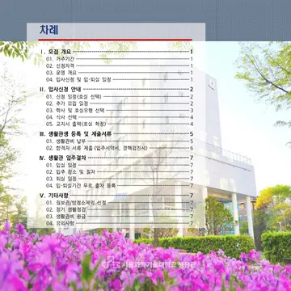

한대장 · 시안 · 2026-11-22
학교 주변 지도 — 신입생 시안
시범 학교 서울과학기술대학교(서울 노원구 공릉동). 홈에서 들어가 학교 안 · 카공 · 생활 · 안전 · 교통 · 혜택 겹을 하나씩 켜 보고, 장학금 앱이라서 할 수 있는 연결 — 신청할 공고의 서류를 어디서 떼는지 — 까지 폰 화면 여덟 장으로 그렸습니다. 지도 위 장소 이름·개수는 지어낸 것이 없습니다: OpenStreetMap(11-22 받음)과 서울 열린데이터광장 파일에서 가져왔고, 못 구한 데이터는 점선 상자로 자리만 그렸습니다. 지도는 끌어서 움직여 볼 수 있습니다.
화면 여덟 장
①이 들어가는 길, ②~⑤가 지도의 겹, ⑥~⑧이 신입생·한대장만의 연결입니다. 화면 아래 회색 글은 화면 밖 설명입니다 — 무엇이 실데이터이고 무엇이 연결 예정인지 적었습니다.
소식 띠 아래에 입구 두 줄만 둡니다. 장학금 목록을 덜 밀어내려고 지도는 작은 그림 하나로 줄였습니다. 하단 탭은 5칸이 꽉 차 새 탭을 만들지 않았습니다.
우리 학교 소식
 [마지막 기회] Microsoft AI-901 자격증 과정 특별 추가 모집
전남대학교 인공지능혁신융합대학사업단에서 Microsoft 인공지능 국제인증자격증(AI-901) 교육과정 교육생을 아래와 같이 추가 모집 하오니 관심 있는 학생들의 많은 참여 바랍니다.
[마지막 기회] Microsoft AI-901 자격증 과정 특별 추가 모집
전남대학교 인공지능혁신융합대학사업단에서 Microsoft 인공지능 국제인증자격증(AI-901) 교육과정 교육생을 아래와 같이 추가 모집 하오니 관심 있는 학생들의 많은 참여 바랍니다.

2026학년도 동계방학 생활관생 모집 안내 (신청 2026학년도 동계방학 생활관생 모집을 안내하오니, 자세한 내용은 [생활관 홈페이지-공지사항] 을 참고하시기 바랍니다. ☞ 생활관 홈페이지 공지사항: https://tinyurl.com/4m8x4z37
[서울지방병무청] 각 군 현역병 모집일정('26년 12월) 안내
병무청에서는 병역의무자의 전공, 자격·면허, 경력 등과 관련있는 군사특기에 지원하여 해당분야에서 복무할 수 있도록 하는 현역병 모집제도를 운영하고 있습니다.
우리 학교 주변
11.22 갱신- 주변 지도정문 반경 500m — 카페 15 · 편의점 12 · 약국 5
- 신입생 첫 주 코스다섯 곳 중 2곳 다녀옴
나에게 맞는 장학금
실데이터소식 띠(사진·요약 두 줄)와 장학 카드는 지금 앱이 과기대 1학년에게 보여 주는 그대로입니다(교내 소식 파일 · 층2 「(재)한국장학재단 국가근로장학금」 적합도 95% — what-shows 로 확인). 「정문 반경 500m — 카페 15 · 편의점 12 · 약국 5」는 OSM 「정문」에서 직선 500m 안을 센 실제 개수입니다.
규칙구역 사이 간격은 앱 홈과 같은 50px. 0곳인 갈래는 줄에 안 적습니다. 「신입생 첫 주 코스」 줄은 1학년 프로필에만 보입니다. 숫자는 OSM 이 그려 둔 만큼이라 실제보다 적을 수 있습니다 — 실서비스는 공공데이터로 채웁니다(아래 「데이터」 표).
처음 열면 「학교 안」 겹. 캠퍼스 경계(점선)와 신입생이 먼저 찾는 곳만 핀으로, 나머지 건물은 회색 점으로.
학교 주변
신입생이 먼저 찾는 곳
- 도서관/정보전산원도서관 별관 옆320m
- 제2학생회관장학복지팀(201호) · 학생 제2 식당 · 보건진료소 · 은행240m
- 제1학생회관학생 제1식당 · 생협 카페 · CU450m
실데이터건물 이름·위치·캠퍼스 경계는 OSM(경계 way 380910936 · 「정문」 노드 5549312537). 각 줄의 시설 이름은 그 건물 안에 OSM 으로 그려진 곳입니다. 「장학복지팀(201호)」은 과기대 장학 공고 원문 「※ 부득이한 경우에만 학생처 장학복지팀(제2학생회관 201호)으로 서면 제출」에서 온 자리 표시입니다(기본 제출 길은 통합정보시스템 사본 첨부).
규칙거리는 정문에서의 직선 거리라 「m」로만 적고 걷는 시간은 적지 않습니다. 겹 칩은 대외활동 분야 칩과 같은 작은 칩 — 한 줄에 다 들어가고(옆으로 밀지 않음), 고르면 테두리만 강조색. 줄을 누르면 그 곳의 판(④ 모양)이 열립니다.
도서관·문고는 핀, 카페는 회색 점. 정문 둘레에 반경 500m · 1km 원.
학교 주변
정문 반경 1km — 도서관·문고 6 · 카페 24
- 도서관/정보전산원학교 도서관 · 도서관 별관 옆320m
- 공릉3동문고도서관620m
실데이터정문 1km 안 도서관·문고 6곳(핀 6개 — 이름 없는 1곳 포함)과 카페 24곳(OSM). 1km 조금 밖(1,008m)인 「한내지혜의 숲」은 이 화면에 넣지 않았습니다. 여는 시간은 OSM 에 없어 줄에 적지 않았습니다 — 실서비스는 전국도서관표준데이터의 운영 시각 칸으로.
연결 예정스터디카페·독서실 — OSM 에는 0곳(안 그려져 있을 뿐). 소상공인 상가정보의 업종 「독서실/스터디 카페」로 채웁니다. 「콘센트·조용함」 같은 카공 평가는 리뷰 낱말로 짐작하지 않습니다(원칙 8-1).
「혜택」 겹에는 지금 진행 중인 교내 혜택·행사가 붙은 곳만 핀으로 섭니다. 누르면 그 곳의 판이 올라옵니다(지도는 그대로 · 아래로 쓸면 접힘).
학교 주변
도서관/정보전산원
도서관 별관 옆 · 정문에서 320m
교내 소식
 도서관 첫 대출자를 찾습니다~ 이벤트 안내 (50명에게 문화상품권 2만원권 추첨 증정, ~11/30)11.02 · 원문 보기 ↗
도서관 첫 대출자를 찾습니다~ 이벤트 안내 (50명에게 문화상품권 2만원권 추첨 증정, ~11/30)11.02 · 원문 보기 ↗
실데이터글 제목·날짜·사진은 앱 교내 소식 파일 그대로(맨 앞 그림 글자만 걷음 — 활동 제목과 같은 규칙). 원문 포스터의 장소 「중앙도서관 동양서자료실, 별관도서관 서양서자료실」을 OSM 「도서관/정보전산원」(영문 이름 Central Library)과 「도서관 별관」 두 곳에 이었고, 셋째 핀 제2학생회관은 원문 「장소: 제2학생회관 3층 305호」(학생상담센터 마음나눔 카페 · 11/27)입니다.
규칙기간이 지난 혜택은 원문 날짜로 내립니다 — 생협 「도서관 카페 핸드드립 할인」은 원문 기간이 10.26~10.30 이라 지금은 안 뜹니다. 글을 장소에 잇는 것은 사람이 확인한 것만(관리자 「할 일」). 절 이름은 홈 띠와 같은 말 「교내 소식」 · 여는 시간처럼 모르는 절은 그리지 않습니다. 길찾기는 앱 밖으로 나가므로 ↗.
점수·별점 없이 있는 시설만. 긴급 전화 둘은 늘 판 안에.
학교 주변
정문 반경 1km — 치안센터 3 · 터널 보행로 비상벨 1
- 공릉치안센터치안센터430m
- 공릉터널 보행로 안전비상벨경찰 연계 · 경고등·경보음·CCTV730m
실데이터치안센터 1km 안 3곳(1.3km 안 4곳 · OSM). 비상벨은 서울 열린데이터광장 OA-15253(서울시 도로사업소 관리 터널·지하차도 49행 · 2026.09.10 기준 · 경찰 연계 Y)의 공릉터널 1곳이라 이름에 「터널 보행로」를 넣었습니다. 파일에 좌표가 없어 공릉터널 위치에 두었습니다(터널 안 어딘가). 치안센터 운영 시간은 자료에 없어 「밤에도 연다」고 적지 않았습니다.
규칙「안전한 동네 ★4.5」 같은 점수는 만들지 않습니다 — 판정 못 하는 축의 점수는 틀린 안심입니다. 가로등은 OSM 에 1km 안 0개라 밝기 근거로 쓰지 않았습니다. 처음 시안의 어두운 밤 지도는 앱에 없는 면이라 뺐습니다(「정해 주실 것」 5).
연결 예정안심귀갓길(서울시 OA-21695 경로 · OA-21696 안전시설물 · 2023.04 기준)은 좌표가 있는 선·점이라 지도에 그대로 그릴 수 있습니다(기준일 같이 표시). 골목 CCTV·비상벨 표준데이터는 원본 서버(file.localdata.go.kr)가 이 환경에서 끊겨 못 받았습니다 — GitHub 러너에서 받아지는지 먼저 확인합니다.
공고 시트 「접수 › 서류」에 관공서 서류가 있으면 「떼는 곳 ›」이 붙습니다. 누르면 이 화면 — 온라인 길을 먼저, 발급기는 그다음.
서류 떼는 곳
(홍보) 통영시 저소득 대학생 장학금 지원대상자 선발 안내D-1
서류 장학금 지급신청서 · 기초생활수급자 또는 차상위계층 증명서 · 재학증명서 · 성적증명서 · 생활기록부 · 주민등록초본 · 통장사본
주민등록초본 · 온라인 무료
- 정부24인터넷 발급 · 본인↗
무인민원발급기 · 정문 반경 1km 안 4곳
- 원자력병원24시간560m
- 공릉1동주민센터평일 09:00–18:00 · 주말·공휴일 쉼620m
실데이터공고는 과기대 장학 게시판의 정식 등록 공고(마감 11.23 · 「서류」 줄 그대로 — 앱 시트와 같은 길로 읽음). 발급기 4곳과 운영 시간은 서울 열린데이터광장 OA-20336 그대로(좌표가 없어 이름이 같은 OSM 시설 자리에 둠).
확인정부24 안내 「주민등록표 등본(초본)」 — 신청방법 「인터넷, 방문, 무인발급기」 · 「인터넷으로 발급받을 때는 무료」(본인). 같은 근거로 가족관계증명서는 대법원 전자가족관계등록시스템에서 인터넷 무료(정부24 는 직접 발급하지 않음). 발급기 수수료(초본 200원 · 가족관계증명서 500원)는 조례로 면제되는 곳이 있어(노원구는 확인 안 함) 화면에 적지 않았습니다.
규칙「떼는 곳 ›」은 서류 줄에 관공서 서류 이름이 원문 글자로 있을 때만, 그리고 발급 길을 근거로 확인한 서류만 굵게 잇습니다 — 「기초생활수급자 또는 차상위계층 증명서」는 발급 길을 아직 확인하지 않아 잇지 않았습니다.
입학 첫 주에 한 번씩 가 볼 곳을 번호 핀으로. 다녀왔는지는 학생이 직접 체크합니다(원칙 8).
첫 주 코스
다섯 곳 중 2곳 다녀옴
- 1서울과학기술대학교정문앞노원13 정류장 · 정문 안쪽
- 2제2학생회관장학복지팀(201호) · 학생 제2 식당 · 보건진료소 · 은행
- 3도서관/정보전산원도서관 별관 옆
- 4제1학생회관학생 제1식당 · 생협 카페 · CU
- 5공릉역다른 이름 서울과학기술대역
실데이터다섯 곳 이름·위치는 OSM(1번은 정류장 이름 그대로 · 노선 표시 route_ref 「노원13」), 묶음은 그 건물 경계 안에 그려진 시설, 공릉역의 다른 이름도 OSM(alt_name)입니다. 지도의 1번 핀은 정문 바로 안이라 이름표를 생략했습니다.
규칙「왜 가야 하는지」는 지어내지 않고 그곳에 실제로 있는 시설 이름만 적습니다. 장학복지팀 자리는 원문에 적힌 곳만(서면 제출은 「부득이한 경우」만 — 원문). 체크는 앱 체크 목록과 같은 모양(줄 전체를 누름 · 체크하면 강조색 원 · 글자는 진하게). 코스 고르기는 관리자 몫(학교마다 한 번).
정문과 가까운 행정동 셋을 경계선으로. 동마다 학교 밖 생활·안전 시설 수를 같은 칸으로 나란히 놓고, 월세 시세는 자리만.
자취 동네
정문과 가까운 행정동 셋
정문 반경 1.3km · 학교 밖 시설
- 공릉2동정문이 있는 동
편의점 21 · 카페 15 · 약국 6 · 코인세탁 1 · 치안센터 1 · 지하철역 0
- 하계1동동 경계까지 70m · 캠퍼스 북쪽 일부
편의점 6 · 카페 2 · 약국 0 · 코인세탁 0 · 치안센터 1 · 지하철역 1
- 공릉1동동 경계까지 220m
편의점 25 · 카페 9 · 약국 3 · 코인세탁 0 · 치안센터 0 · 지하철역 1
실데이터행정동 경계(OSM admin_level 8)와 동 안 시설 수(점이 경계 안에 드는지로 셈 · 캠퍼스 안 시설은 뺌). 정문은 공릉2동이고, 캠퍼스 북서쪽(도서관·제1학생회관·기숙사)은 하계1동에 걸칩니다. 장소를 정문 1.3km 원 안에서만 받아서 동마다 센 몫이 다릅니다(공릉2동은 동 넓이의 약 3분의 1만 원 안) — 화면 머리줄에 그 범위를 적었습니다.
연결 예정월세·전세 — 국토교통부 연립다세대·오피스텔 전월세 실거래가는 좌표 없이 법정동·지번으로 옵니다. 지도의 행정동(공릉1동·2동)과 단위가 달라 시세는 법정동(공릉동·하계동) 묶음으로만 보여 줄 수 있습니다(지번을 행정동으로 바꿀 수 있는지는 확인 전). 「살기 좋은 동네」 순위는 매기지 않습니다.
정해 주실 것
시안에는 추천안으로 그렸습니다. 바꾸시면 그 화면만 다시 그립니다.
1. 어디서 들어가나
추천 A — 카공·생활은 학년과 상관없이 쓰입니다. 하단 탭은 5칸이 꽉 차 새 탭은 안 만듭니다.
2. 겹을 어떻게 켜고, 핀은 무슨 색으로
추천 A — 처음 온 학생에게 핀 수백 개가 한꺼번에 뜨면 읽히지 않습니다. 겹쳐 보기는 「목록 보기」로.
3. 바탕 지도
추천 A — 브이월드의 타일 주소 형식·사용량 한도는 브이월드 사이트가 이 환경에서 열리지 않아 아직 확인 못 했습니다. 길찾기는 어느 쪽이든 카카오맵·네이버 지도로 넘깁니다.
4. 혜택 글을 장소에 잇는 사람
추천 A — 과기대만 해도 「과기대 생협 카페」가 OSM 에 6곳입니다.
5. 안전 겹을 어두운 지도로?
추천 A — 앱은 밝은 한 벌뿐입니다.
6. 술집·과팅 장소
추천 A
데이터 — 어디서 무엇을
시안에 쓴 것과 실서비스에 쓸 것. 「받음」은 이번에 실제로 받아 본 것, 「못 받음」은 받으려다 실패한 것, 「확인」은 근거 문서를 읽은 것입니다.
| 겹 | 데이터 | 이번 시안 | 실서비스 |
|---|---|---|---|
| 전부 | OpenStreetMap — 장소·건물·캠퍼스·행정동 경계 (ODbL · 출처 표시) | 받음 — 정문 1.3km 안 421곳(음식점·패스트푸드·가로등은 개수만) · 경계 8곳 · api.openstreetmap.org 29회 | 학교 안 건물·경계는 OSM, 가게 수는 아래 공공데이터로 |
| 바탕 지도 | 국토교통부 브이월드 WMTS — 무료 · 공공누리 1유형(출처 표시) · 회색·미드나잇 지도 · 열쇠 필요 | 안 씀 — 사이트 연결이 안 돼 타일 주소·한도 확인 못 함 | 추천(결정 3) |
| 바탕 지도 | OpenStreetMap 공식 타일 | 씀(시안에서만) | 안 씀 — 정책이 Referer 를 요구하는데 앱은 Referer 를 끄는 설정(index.html) |
| 서류 | 정부24(주민등록 등·초본) · 대법원 전자가족관계등록시스템(가족관계증명서) | 확인 — 둘 다 인터넷 발급 무료 · 발급기로도 발급(정부24 안내의 신청방법) | ⑥ 「온라인 무료」 줄 |
| 서류 | 서울시 무인민원 발급기 설치 정보 (서울 열린데이터광장 OA-20336 · 매일 갱신) | 받음 — 779행, 반경 안 6곳(서울 열린데이터 7곳 중) · 좌표 없음(이름으로 자리 맞춤) | 그대로 · 지방 학교는 따로 찾기 |
| 안전 | 서울시 안전비상벨 설치위치 (OA-15253) | 받음 — 49행(터널·지하차도) · 좌표 없음 | — |
| 안전 | 전국CCTV표준데이터 · 전국안전비상벨위치표준데이터 (행정안전부 · 공공데이터포털) | 못 받음 — 원본 서버(file.localdata.go.kr) 연결 끊김 ×4. CCTV 는 위경도(WGS84) 명시, 비상벨은 좌표계 표기가 엇갈림 | GitHub 러너에서 받아지는지 먼저 확인 |
| 안전 | 서울시 안심귀갓길 경로·안전시설물·서비스 (OA-21695 · 21696 · 21697 · 2023.04 기준) | 안 씀 — 좌표 있음(선·점) | 안전 겹에 경로 선 · 기준일 표시 |
| 안전 | 생활안전지도 치안안전시설 API (행정안전부 · 좌표 UTM-K · 열쇠 필요) | 안 씀 | 치안센터·지구대 위치 |
| 카공 | 전국도서관표준데이터 (평일·토요일 운영 시각 · 위도·경도 · 연 1회) | 안 씀 | 도서관 여는 시간 |
| 카공·생활 | 소상공인 상가(상권)정보 — 업종 「독서실/스터디 카페」 · 「셀프 빨래방」 · 위도·경도 · 분기 갱신 | 안 씀 | 스터디카페·코인세탁 개수 |
| 자취 | 국토교통부 연립다세대·오피스텔 전월세 실거래가 (좌표 없음 · 법정동·지번) | 안 씀 | 법정동(공릉동·하계동) 단위 시세 |
| 보충 | 카카오 로컬 키워드·카테고리 장소 검색 (일 10만 건씩 무료) | 안 씀 | 빈 곳 보충 — 결과를 저장해도 되는지는 카카오에 확인 필요 |
| 혜택 | 앱 교내 소식(학교 공지 게시판) | 씀 — 과기대 소식 파일의 실제 글 · 원문을 열어 기간·장소 확인 | 그대로 + 관리자가 장소에 잇기 |
| 서류 | 앱 공고 시트의 「서류」 줄 | 씀 — 마감 전 실제 공고 | 그대로 |
지킨 원칙
- 지어낸 값 없음(원칙 6) — 이름·개수·시간은 받은 파일 그대로. 못 구한 것은 점선 상자. 숫자가 OSM 기준이라 실제보다 적을 수 있다는 것, 자리를 이름으로 맞춘 방법 같은 앱 내부 사정은 화면이 아니라 이 설명에 적었습니다.
- 짐작 금지(원칙 8-1) — 「카공하기 좋음」·「안전한 동네」·「왜 이곳에 가야 하는지」를 지어내지 않았습니다. 걷는 시간 대신 직선 거리.
- 틀린 안심 금지 — 안전은 점수 없이 시설만. 운영 시간을 모르는 치안센터를 「밤에도」로 묶지 않았고, 가로등처럼 근거가 빈약한 것은 쓰지 않았습니다.
- 위치정보를 받지 않음 — 모든 거리는 학교 정문 기준. 학생의 현재 위치는 묻지 않습니다(받으면 위치정보 동의·고지가 따로 필요).
- 진척은 학생이 기록(원칙 8) — 첫 주 코스의 「다녀옴」은 학생이 직접 체크.
- 바깥 스크립트 없음 — 지도 프로그램(Leaflet 1.9.4 · BSD-2)을 저장소 사본으로. 앱 보안 설정(script-src 'self')을 그대로 둘 수 있고, 그림 주소 하나만 img-src 에 더합니다.
- 앱 화면 규칙 그대로 — 핀은 남색 한 색(갈래는 그림으로) · 고른 곳은 강조색 테두리 · 그림자는 토큰만(떠 있는 판과 핀) · 글자는 앱 척도(11.5~21px) · 칩은 고르면 테두리만 · 화면 제목 밑줄 없음 · 구분선은 목록에만 · 안쪽 화면 머리에 오른쪽 단추 없음.
만드는 순서(제안)
- 1. 로봇 — 학교마다
data/map/<학교키>.json(학교별 파일 · 폰은 자기 학교 것만 · 열쇠는 공고 파일과 같은 규칙), 주 1회. OSM + 공공데이터 파일. - 2. 홈 입구(①) + 지도(②~⑤) + 장소 판(④) — 한 학교로 먼저.
- 3. 서류 떼는 곳(⑥) — 공고 시트 「서류」 줄과 연결.
- 4. 첫 주 코스(⑦) — 학교마다 관리자가 한 번 고름.
- 5. 자취 동네(⑧) — 실거래가 연결 뒤.
- 6. 혜택 잇기 — 관리자 「할 일」에 '장소에 이을 글' 묶음.
지도 그림 © OpenStreetMap contributors(ODbL) — 시안에서만 OSM 공식 타일 서버를 씁니다(실서비스에서 쓰는 곳이 아님). 공공데이터: 서울 열린데이터광장 OA-20336 · OA-15253. 앱 부품 모양은 2026-11-22 style.css 실효값 사본(app-parts.css · tokens.css) — 앱이 바뀌면 이 사본은 낡습니다. 지도 데이터: data.js(정문 1.3km 안 · 11-22 받음). 화면 그림: shots/.